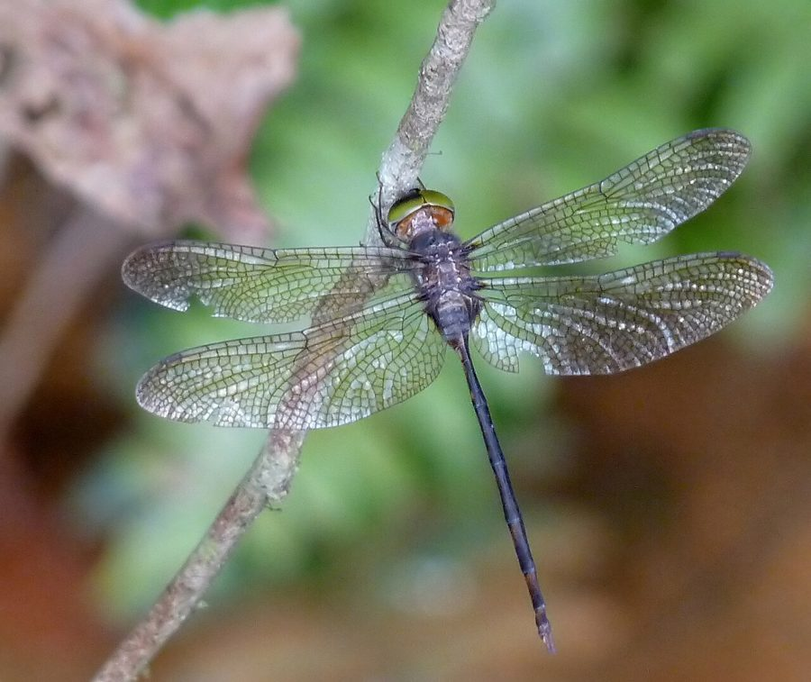

ब्राउन डस्क हॉक व्याध पतंगBrown Dusk Hawk Dragonfly
Zyxomma petiolatum · Libellulidae · INS-0200

- Scientific name वैज्ञानिक नाम
- Zyxomma petiolatum Rambur, 1842
- Family कुल
- Libellulidae
- Hindi हिंदी
- ब्राउन डस्क हॉक व्याध पतंग
- Local names स्थानीय नाम
- brown dusk hawk dragonfly, brown dusk hawk, dusk hawk, bhuri vyadh patang
- Status here यहाँ की स्थिति
- native
- Movement आवागमन
- Resident, here all year
- Known from कहाँ दर्ज
- Others have published records from the wider Awadh–Purvanchal plain, none yet from Basti–Ayodhya अवध–पूर्वांचल से दूसरों के प्रकाशित अभिलेख, बस्ती–अयोध्या से अभी नहीं
- IUCN IUCN
- not evaluated
- Review समीक्षा
- not yet reviewed
When to look कब देखें
Present all year. साल भर मौजूद।
Uses and possibilities उपयोग और संभावनाएँ
Drawn from the documented uses in the profile below, where each is labelled traditional, current or a research lead. All uses →
Tell it apart from इनसे अलग पहचानें
ब्राउन डस्क हॉक व्याध पतंग / Brown Dusk Hawk Dragonfly
Zyxomma petiolatum Rambur, 1842 — Libellulidae
ब्राउन डस्क हॉक व्याध पतंग — शाम के धुंधलके और भोर में उड़ने वाली एक अनोखी पतली और भूरे रंग की व्याध पतंग (dragonfly) है। इसकी आँखें बहुत बड़ी और चमकदार पन्ना जैसी हरी होती हैं, सीना और पेट गहरा भूरा होता है और पेट बीच से बहुत पतला होता है। दिन में यह घने पेड़ों या बांस की झुरमुटों में छिपी रहती है और शाम ढलते ही पानी के ऊपर उड़ने वाले मच्छरों का तेजी से शिकार करती है।
Quick Identification त्वरित पहचान
| Feature | Description |
|---|---|
| Size | Medium-sized, slender dragonfly; abdomen 37–42 mm, hindwing 32–35 mm (Subramanian 2005) |
| Compound Eyes | Enormously enlarged, contiguous atop head; emerald-green in life (Fraser 1936) |
| Abdomen Shape | Markedly petiolate; bulbous at base, paper-thin in middle, flared at tip (Fraser 1936) |
| Ground Colour | Deep chocolate-brown to reddish-brown throughout with pale yellow markings (Subramanian 2005) |
| Wings | Long, narrow, hyaline, with small dark brown basal spots and dark pterostigma (Fraser 1936) |
| Flight Habits | Strictly crepuscular; active at dusk and dawn, resting in shade by day (Subramanian 2005) |
| Perching Pose | Hangs vertically from twigs and dry bamboo stems in deep shade |
Field tip: Watch quiet village tanks or shady garden ponds just as the sun sets. When other dragonflies have settled for the night, a slender brown dragonfly with enormous glowing green eyes hawking swiftly back and forth low over the water surface is the Brown Dusk Hawk.
हिंदी: शाम के समय तालाबों पर तेजी से चक्कर लगाने वाली इस भूरी पतंग की आँखें बड़ी और हरी होती हैं। दिन में यह बांस की छाया में सीधी लटककर सोती है।
Morphology आकारिकी
Measurements as given in the handbooks (Subramanian 2005; Fraser 1936):
| Measurement | Range | Source |
|---|---|---|
| Abdomen length | 37–42 mm | Subramanian (2005) |
| Hindwing length | 32–35 mm | Subramanian (2005) |
Adult description:
Zyxomma petiolatum is an extraordinarily specialized libellulid dragonfly adapted for crepuscular hunting (Fraser 1936). The head is dominated by gigantic, hemispherical compound eyes that meet broadly across the top of the head for a long suture; in living specimens, they glow with an intense, brilliant emerald-green (Subramanian 2005). The labium is pale yellow, the labrum is bright yellow, and the vesicle is dark brown (Fraser 1936).
The synthorax is dark chocolate-brown, clothed in fine silky hairs, and adorned with obscure pale yellowish or olivaceous lateral stripes (Subramanian 2005). The abdomen exhibits an extreme petiolate structure: segments 1 and 2 are strongly swollen and globose; segment 3 is abruptly constricted into an exceedingly slender, thread-like waist; segments 4 through 6 remain very thin; and segments 7 through 9 are moderately expanded and flattened before tapering to the anal appendages (Fraser 1936).
Females resemble males in colour and shape, but have slightly broader abdomens and shorter, conical anal appendages (Fraser 1936). In both sexes, the wings are long, slender, and hyaline, bearing a tiny, dark reddish-brown patch at the extreme base of the hindwing and an elongate, blackish-brown pterostigma (Subramanian 2005).
Larval Stage निम्फ अवस्था
The aquatic naiad is squat, broad, and dark mottled brown or blackish-grey, living buried shallowly in silt and decaying leaf litter at the bottom of shaded stagnant tanks. Its compound eyes are disproportionately prominent, and its mask (labium) is deeply cupped and armed with sharp lateral spines for seizing swimming mosquito larvae.
हिंदी: इसका पेट 37 से 42 मिमी लंबा होता है, जो बीच में धागे जैसा पतला और दोनों सिरों पर चौड़ा होता है। इसकी हरी आँखें बहुत बड़ी होती हैं और पंख लंबे पारदर्शी होते हैं।
Behaviour & Ecology व्यवहार और पारिस्थितिकी
The Brown Dusk Hawk Dragonfly is an obligate crepuscular specialist (Subramanian 2005). During daylight hours, adults remain completely inactive, roosting vertically suspended from dry twigs, bamboo branches, or thorny shrubs inside deeply shaded village orchards and grove thickets (Fraser 1936). If flushed accidentally during midday, they fly weakly for a few metres before immediately seeking another dark, sheltered perch.
As darkness falls at sunset, individuals suddenly emerge from their daytime roosts and converge on stagnant ponds, irrigation ditches, and garden pools (Subramanian 2005). Their flight becomes remarkably swift, erratic, and swooping, skimming within inches of the water surface to capture swarming dipterans (Fraser 1936). Hunting continues into total darkness, and resumes for a brief period before dawn. Mating takes place on the wing at dusk. Oviposition is exophytic: the female flies rapidly over open water, dipping the tip of her abdomen into the surface to wash off clutches of eggs.
हिंदी: यह दिन भर घने अंधेरे में छिपकर आराम करती है और शाम होते ही शिकार पर निकलती है। पानी के ठीक ऊपर बहुत तेज उड़ते हुए यह शाम को निकलने वाले मच्छरों को हवा में ही दबोच लेती है।
Life Cycle / Phenology जीवन चक्र
Seasonal phenology in northern Indian alluvial wetlands across the agricultural year (Fraser 1936; Subramanian 2005):
| Season / Month | Stage | Field Observation |
|---|---|---|
| July–September (Kharif monsoon) | Adult peak & breeding | High crepuscular flight; females ovipositing in rain-filled tanks (Subramanian 2005) |
| October–November (Post-monsoon) | Adult & Naiad | Active dusk flights over receding village ponds and ditches |
| December–January (Rabi winter) | Naiad overwintering | Bottom-dwelling nymphs feed slowly on benthic invertebrates |
| February–April (Spring / Zaid) | Adult emergence | Spring brood emerges; active at dusk around perennial orchard tanks (Fraser 1936) |
| May–June (Pre-monsoon summer) | Drought refuge | Restricted to perennial shaded ponds and deep brick-kiln water pits (Subramanian 2005) |
Females hover over open water in the evening twilight and tap the surface rhythmically, releasing hundreds of gelatinous eggs that sink into the bottom detritus. The eggs hatch after a few days into predatory nymphs. Larval development lasts several weeks through multiple instars, feeding on benthic midge larvae and aquatic bugs. When fully grown, the nymph crawls out of the water onto overhanging tree trunks or bamboo culms at dusk to metamorphose into an adult.
हिंदी: मादा शाम के समय पानी की सतह पर पेट मारकर अंडे छोड़ती है। अंडे कुछ दिनों में फूटते हैं और पानी की तलहटी में रहने वाला निम्फ कुछ हफ्तों में बड़ा होकर तने पर चढ़कर पतंग बन जाता है।
Host Plants or Prey आहार
Zyxomma petiolatum is an efficient predator of nocturnal and crepuscular flying insects (Subramanian 2005):
Adult diet:
- Swarming crepuscular mosquitoes, including Culex quinquefasciatus (Southern House Mosquito) and Culex tritaeniorhynchus (Rice-field Mosquito).
- Small night-flying moths, caddisflies (Trichoptera), and wetland midges (Chironomidae).
- Small beetles and flying termites emerging in early evening after monsoon showers.
Larval diet:
- Mosquito wrigglers, chironomid bloodworms, mayfly nymphs, and small tadpoles in leaf-litter bottoms.
हिंदी: यह कीट शाम को भिनभिनाने वाले मच्छरों, छोटे पतंगों और पानी के कीड़ों का शिकार करता है। इसका निम्फ पानी की तली में मच्छरों के लार्वा को नष्ट करता है।
Predators / Natural Enemies शत्रु
Natural enemies documented in wetland ecosystems across northern India:
- Bats: Insectivorous micro-bats (such as pipistrelles) sharing twilight airspace over village ponds compete with and occasionally capture flying dusk hawks.
- Owls and nightjars: Crepuscular birds, such as Indian nightjars and owlets, pursue large flying insects along water margins.
- Predatory fish: Murrels and catfishes feed on bottom-dwelling nymphs in muddy tanks.
- Spiders: Large huntsman spiders and wetland spiders occasionally attack daytime-roosting adults in bamboo groves.
हिंदी: शाम को उड़ने वाले चमगादड़ और उल्लू इस पतंग का शिकार कर सकते हैं, जबकि पानी के अंदर बड़ी मछलियाँ इसके निम्फ को खा जाती हैं।
Agricultural / Human Relevance कृषि प्रासंगिकता
Rural mosquito suppression: Zyxomma petiolatum performs an exceptional public health service in human-settled rural areas of eastern Uttar Pradesh (Subramanian 2005). Because its peak hunting period precisely coincides with the crepuscular biting swarms of vector mosquitoes like Culex quinquefasciatus (Southern House Mosquito) and Culex tritaeniorhynchus (Rice-field Mosquito), it functions as an intensive natural mosquito predator around village habitations.
Water reservoir compatibility: It readily breeds in artificial water storage tanks, temple kunds, and brick-kiln pits, helping sanitize standing water that would otherwise generate severe pest mosquito outbreaks (Subramanian 2005).
Traditional: No traditional medicinal, ritual, or economic uses are recorded.
Today: Highly regarded by odonatologists for its extreme sensory and behavioural adaptations to crepuscular life.
Research direction (a lead, not a result): Investigating the visual pigment spectral sensitivity of Zyxomma eyes under low-light twilight conditions.
हिंदी: यह पतंग ग्रामीण स्वास्थ्य के लिए बेहद फायदेमंद है क्योंकि यह शाम को निकलने वाले बीमारी फैलाने वाले मच्छरों को बड़ी संख्या में चट कर जाती है।
Expected Locally स्थानीय रूप से अपेक्षित
Not a field record. Written from published accounts for eastern Uttar Pradesh. No confirmed local sighting yet — if you have seen it, that is what the atlas needs.
अभी तक स्थानीय पुष्टि नहीं। यह विवरण प्रकाशित स्रोतों से है, किसी अवलोकन से नहीं।
The Brown Dusk Hawk Dragonfly is expected across eastern Uttar Pradesh around shaded village ponds, temple tanks, and perennial garden water bodies surrounded by bamboo or old trees. Look low over the water surface during the twenty to thirty minutes immediately following sunset from July through November. GBIF holds published records from the wider Awadh–Purvanchal plain, none yet from Basti–Ayodhya. A photograph taken under flash showing the petiolate brown abdomen and green eyes, submitted through the About page, would confirm the first local documentation for the district.
Distribution वितरण
Global range: Widely distributed across the Indo-Australian tropics, ranging from India and Sri Lanka across Southeast Asia to southern China, the Philippines, Indonesia, New Guinea, and northern Australia (Fraser 1936).
In India: Recorded throughout peninsular India, the Western and Eastern Ghats, central India, and across the Gangetic plain to Assam and the Andaman Islands (Prasad & Varshney 1995; Mitra 2002).
In Uttar Pradesh: Recorded from wooded wetlands, urban temple tanks, and rural countryside ponds throughout central and eastern districts.
In Basti district / eastern UP: Expected as a resident breeding dragonfly in perennial village ponds and shaded orchard water bodies.
हिंदी: यह भारत से लेकर दक्षिण-पूर्व एशिया और ऑस्ट्रेलिया तक पाई जाती है। उत्तर प्रदेश के उन सभी गावों में यह मिल सकती है जहाँ पुराने और छायादार तालाब हैं।
Research Questions शोध प्रश्न
- How many adult mosquitoes does a single Zyxomma petiolatum consume during its 30-minute evening hunting flight? / आधे घंटे की शाम की उड़ान में यह पतंग कितने मच्छरों को खा जाती है?
- What minimum light intensity threshold terminates evening foraging flight over water bodies?
- How do modern artificial streetlights installed near village ponds disrupt natural crepuscular flight patterns? / बिजली की लाइटों का इस कीट के शाम के शिकार पर क्या असर पड़ता है?
- What proportion of the nymphal diet in rural tanks consists of Japanese encephalitis vector larvae?
- Can local youth use phone flashlights at dusk to document adult emergence on pond-side tree trunks?
Similar Species मिलती-जुलती प्रजातियाँ
| Species | How to tell apart | हिंदी | |
|---|---|---|---|
| Pantala flavescens ([[wandering_glider\ | Wandering Glider]]) | Bright yellowish-orange body with broad hindwings; flies high in open sunshine; not crepuscular | सुनहरी व्याधपतंग — दिन में उड़ने वाली पीली पतंग |
| Potamarcha congener ([[yellow_tailed_ashy_skimmer\ | Yellow-tailed Ashy Skimmer]]) | Thorax and abdomen ashy-grey with bright yellow-orange tip; active during daylight hours | येलो-टेल्ड ऐशी स्किमर — धूसर शरीर और पीली पूँछ |
| Acisoma panorpoides ([[trumpet_tail\ | Trumpet Tail]]) | Much smaller; bright marbled blue and black with trumpet-shaped abdomen; diurnal percher | ट्रम्पेट टेल — छोटी नीली-काली पतंग |
Field rule: A slender, chocolate-brown dragonfly with huge glowing emerald-green eyes and a paper-thin constricted waist, flying swiftly low over water only at dusk, is the Brown Dusk Hawk.
हिंदी: अन्य सभी आम व्याध पतंगें दिन की तेज धूप में उड़ती हैं, जबकि ब्राउन डस्क हॉक केवल शाम के धुंधलके में पानी के ऊपर बहुत तेजी से उड़ती है।
Taxonomy & Classification वर्गीकरण
Original description. Described by Jules Pierre Rambur in 1842 as Zyxomma petiolatum in Histoire naturelle des insectes. Névroptères, page 30, plate 2, figure 4d. Type locality: "Bombay" (Mumbai, India).
Subspecies. Monotypic — no subspecies are recognized across its extensive Indo-Australian range.
Family and order placement. Order Odonata, suborder Anisoptera, family Libellulidae. The genus Zyxomma Rambur, 1842, consists of specialized crepuscular dragonflies with deeply petiolate abdomens and huge eyes.
Phylogenetic notes. Zyxomma is closely allied to Tholymis and Brachythemis within the subfamily Sympetrinae, characterized by specialized low-light optical structures and streamlined petiolate flight morphology (Subramanian 2005).
IUCN status rationale. Not evaluated (NE) on the global IUCN Red List of Threatened Species. It is an extremely widespread, adaptable, and common tropical species across multiple ocean basins.
हिंदी: इसका वैज्ञानिक नाम Zyxomma petiolatum है और यह Libellulidae परिवार की सदस्य है। प्रकृति में इसका वास पूरी तरह सुरक्षित है।
Photo Gallery फोटो गैलरी
No photos yet — add field photos to media/species/brown_dusk_hawk_dragonfly/ and run node scripts/sync_photos.js.
Photos needed आवश्यक फोटो
- [ ] Adult hanging vertically from shaded twig during daytime (दिन में छायादार टहनी पर लटकी पतंग)
- [ ] Close-up of glowing emerald-green compound eyes (बड़ी हरी आँखों की क्लोज-अप तस्वीर)
- [ ] Adult hovering over pond at dusk under flash photography (शाम के समय पानी पर उड़ती पतंग)
- [ ] Aquatic nymph from bottom silt of village tank (तालाब की तली का लार्वा)
References संदर्भ
- Rambur, M. P. (1842). Histoire naturelle des insectes. Névroptères. Librairie encyclopédique de Roret, Paris, p. 30, pl. 2, fig. 4d.
- Fraser, F. C. (1936). The Fauna of British India, Including Ceylon and Burma. Odonata, Vol. 3. Taylor and Francis, London, pp. 409–412.
- Subramanian, K. A. (2005). Dragonflies and Damselflies of Peninsular India — A Field Guide. E-book of Project Lifescape, Centre for Ecological Sciences, Indian Institute of Science and Indian Academy of Sciences, Bangalore, p. 116.
- Prasad, M. & Varshney, R. K. (1995). A check-list of the Odonata of India including data on larval studies. Oriental Insects, 29(1): 385–428.
- Mitra, T. R. (2002). Geographical distribution of Odonata (Insecta) of Eastern India. Memoirs of the Zoological Survey of India, 19(1): 1–208.
- GBIF Occurrence Data — Zyxomma petiolatum, India (2025).
Source file: species/fauna/insects/brown_dusk_hawk_dragonfly.md